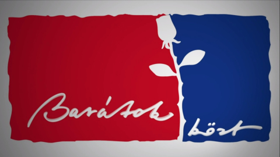

Szendrő Csaba
38 éves
Kötlő
Magyarország
Ig: @szendrői__csaba
Csabiról
Az Elfánt banda
fő énekeseként
ismert híres zeneköltő
is. Egy okos
karizmatikus ember.
Nyitott és kedvelőivel
is barátilag beszél.
imádunk Csabi!!
Közeli ismerősök


Pár zene amit Csabi írt
Legutóbbi albuma: SEMMI
Legújabb Blog: SEMMI
csokozooon!!
Literalisan imadom ezt az albumot. Van benne szomorú, táncolós, igazából mindenből egy kicsi.
Imádom Szendrői szóhasználatát. Most sem csalódtam!! Pont ugyan olyan jók mint a versei!
- bogy
Közölve: 10/10/2024 12:00 AM
Comments (4)
meowmeow34
10/14/2024 17:36
IMADOM!!